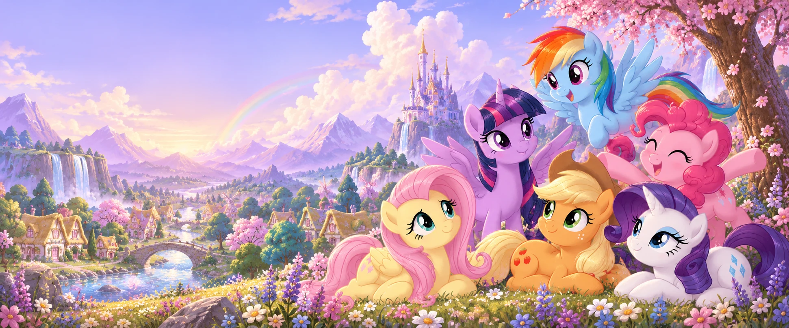

АРКАДАвыше облаков
Радужный полёт
Лети навстречу радуге! Собирай звёздочки и ловко обходи грозовые тучки.
Ловкость и реакция
Твой первый рекорд ещё впереди

Загляни в Эквестрию, найди любимую игру
и подари себе немного волшебства.
Лети навстречу радуге! Собирай звёздочки и ловко обходи грозовые тучки.
За каждой карточкой прячется друг. Найди все пары и собери пони вместе!
Устрой маленький праздник! Попадай в ритм и зажигай звёзды на танцполе.
Води мышью по рогу, накапливай силу и попадай магическими снарядами в монстриков!
Нажми на сердечко на карточке, чтобы сохранить игру.
Начни с одной игры — и открой своё первое достижение.